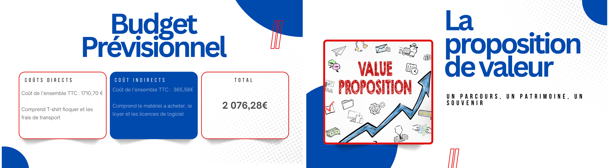
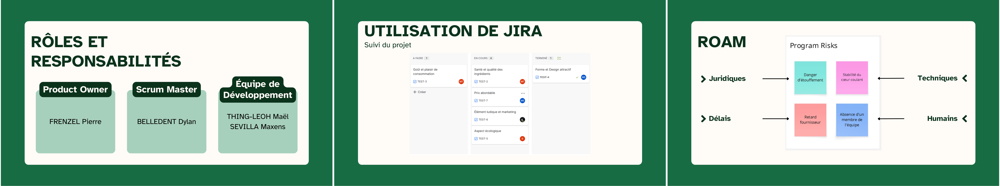

Trace 1 (avant)
TPA2 / Béziers Urban Trail
Projet de groupe (10 personnes) pour organiser la participation de l'IUT au Béziers Urban Trail. Gestion de projet classique.

Points clés : TPA2
- Méthodologie : Informelle et peu cadrée
- Équipe : 10 personnes, tâches par affinité
- Ma contribution : Budget complet et gestion devis
Informel → Agile
Trace 2 (après)
Croq'Berry / Pop's
Projet de groupe géré en méthode agile (Scrum) pour concevoir une barre de céréales, du prototype Croq'Berry au produit final Pop's.

Points clés : Pop's
- Méthodologie : Scrum (Sprints, Dailies, Reviews)
- Outils : Board Jira, Kanban, ROAM (Risques)
- Agilité pure : Pivot stratégique au fil des feedbacks client
Mon analyse (preuve)
Ces deux projets montrent deux façons de collaborer. Sur TPA2, la collaboration était informelle : une grande équipe de 10 personnes, des tâches réparties par affinité, une coordination peu cadrée. J'y ai contribué en prenant en charge un volet entier (le budget et les devis) tout en m'articulant avec les autres (analyse, questionnaire, visuels).
Sur Croq'Berry / Pop's, la collaboration est devenue structurée et agile : des rôles définis (Product Owner, Scrum Master, équipe de développement), des rituels (Sprint Planning, Daily, Review, Rétrospective), un outil partagé (Jira : backlog, kanban, burndown) et une analyse de risques collective (ROAM). Chacun savait qui faisait quoi, et le feedback du client à chaque Sprint Review nous a fait pivoter (de Croq'Berry vers Pop's) - c'est exactement la composante CE5.02 : favoriser la collaboration entre les parties prenantes.
Mon évolution entre les deux traces
Entre TPA2 et Croq'Berry, ma manière de collaborer a mûri. Je suis passé d'une collaboration informelle (se répartir des tâches dans une grande équipe, sans cadre) à une collaboration structurée et itérative (rôles définis, rituels Scrum, board partagé, boucles de feedback). J'ai aussi découvert et appliqué la méthode agile (bonus AC25.01) : travailler par sprints, inspecter, s'adapter. C'est cette montée en cadre qui marque ma progression sur la compétence Entreprendre.
Ma difficulté
Sur TPA2, à 10, des tâches se chevauchaient et l'information circulait mal. C'est ce qui m'a fait apprécier, sur Croq'Berry, l'intérêt d'un cadre clair : le Daily de 15 min et le board Jira ont supprimé ces frictions. Ma difficulté a été d'apprendre à m'en tenir au périmètre de mon ticket plutôt que de vouloir tout toucher.